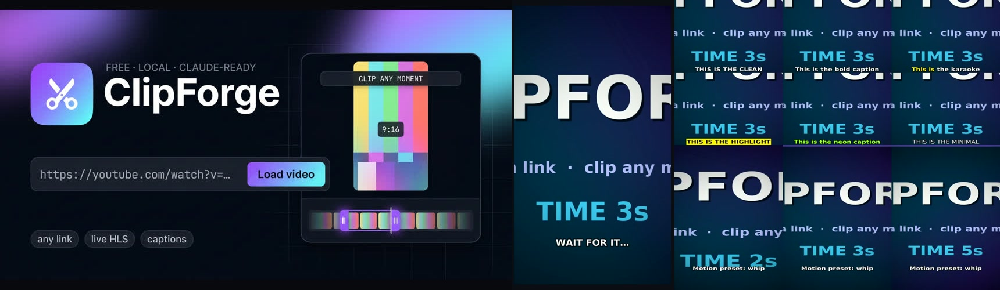
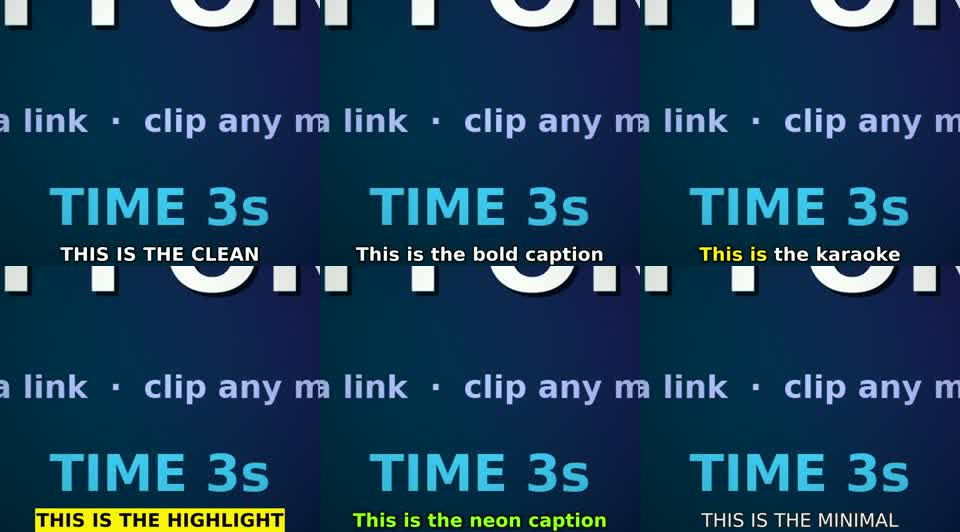
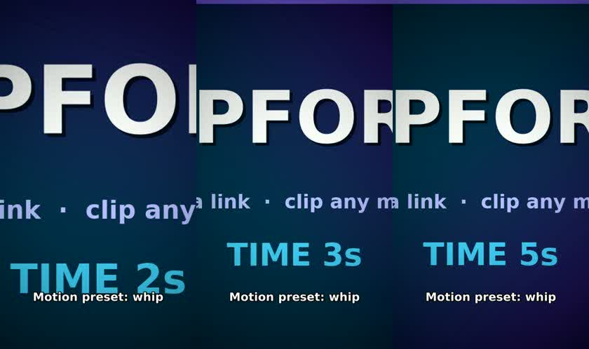
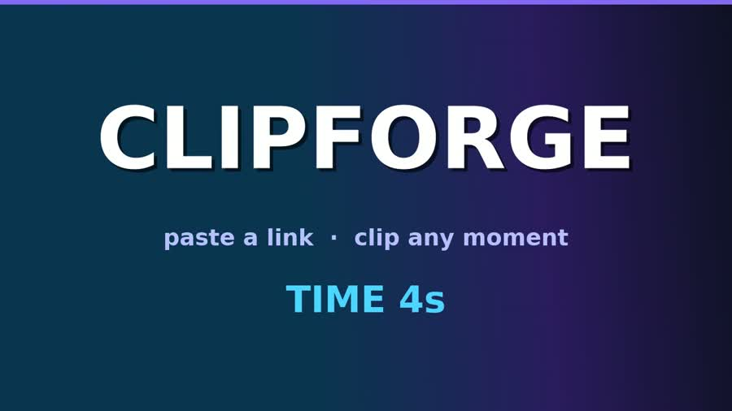
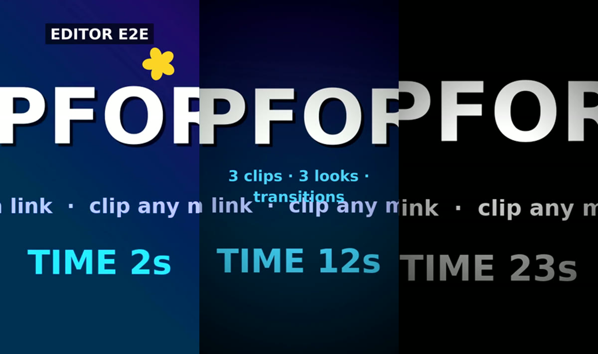
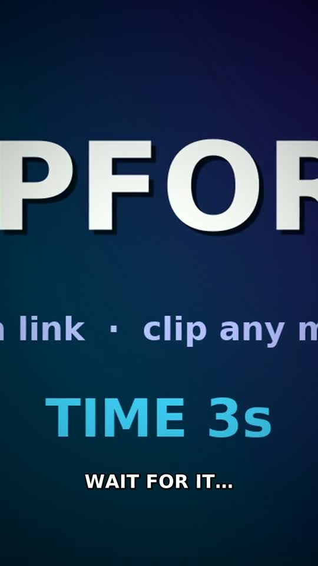
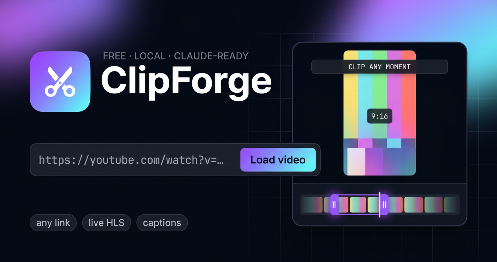

One paste. Ten specialist agents. A finished vertical clip with burned-in captions, camera motion and a platform-ready caption pack — produced entirely on your own machine, for free, with unlimited clips. ClipForge plugs straight into Claude Code and gives it a browser engine to search, edit and deliver video.
ClipForge is a free, unlimited video clipping studio that runs on the user's own computer. Paste any video link — a YouTube video, a Vimeo page, a Twitch stream, a direct MP4 or a live HLS feed — choose a moment, and get a clean MP4 with captions and motion, ready for Shorts, Reels or TikTok. Nothing is uploaded, there are no credits, and there is no watermark.

YouTube · Vimeo · Twitch · Kick · Facebook · X pages (via yt-dlp),
direct MP4 / WebM / MOV files, HLS .m3u8, DASH .mpd,
and live streams.
9:16 / 1:1 / 4:5 / 16:9 / 4:3 with smart centre-crop, burned-in captions, camera motion and a light grade. 1080-class vertical, H.264 + AAC.
Detects live HLS/DASH and page lives, previews them through a local proxy, records N seconds from the live edge, then clips that buffer.
One MCP server gives Claude Code a browser engine plus 8 tools and 4 saved prompts — so “find a viral cat clip and edit it” becomes one call.
Every clip is produced by a ten-agent pipeline. Each agent owns one job and returns a compact result, so the whole production costs about 90 tokens of Claude context while the heavy work happens in the engine.
| # | Agent | Job | What it produces |
|---|---|---|---|
| 1 | Talent Scout | Finds candidate videos | Candidates from YouTube search or the user's link. |
| 2 | Analyst | Ranks the candidates | Duration, resolution, audio, vertical-ness, virality score. |
| 3 | Editor | Picks the moment | In/out window: skips intros/outros or obeys given timestamps. |
| 4 | Clip Smith | Cuts the clip | Keyframe-aware copy or x264 cut, framed for the platform. |
| 5 | Captioner | Writes + burns captions | ASS subtitles in the chosen style, word-timed on request. |
| 6 | Motion Artist | Adds movement | Zoom, pan, shake, pulse or whip + light cinematic grade. |
| 7 | Sound Tech | Checks the audio | Audio-track verification and EBU R128 loudness reading. |
| 8 | Thumbnailist | Makes the poster frame | Hook-frame JPEG for thumbnails and previews. |
| 9 | SEO Writer | Packages the post | Title, description, hashtags, best posting time. |
| 10 | QC Lead | Verifies the delivery | Duration, size and audio/video tracks — blocks broken exports. |

Paste an SRT/VTT file for exact sync, or plain lines — the engine times each line across the clip, wraps it to the frame and animates it in. Six visual styles, no external service.
zoom in zoom out pan left pan right shake pulse whip — with a light grade so footage reads as edited.

Any .m3u8 / .mpd manifest, or a Twitch / YouTube-live / Kick page. The engine reads the manifest with ffmpeg and reports LIVE with no fixed duration.
Manifests and segments stream through the local server with playlist rewriting, so the browser can play feeds that block CORS or need a Referer.
ffmpeg captures N seconds from the live edge into a fragmented MP4, then remuxes it into a clean, seekable file.
Load the recording in the Studio, pick the moment, add captions and motion. Everything stays on disk in .data/live.

Testing without a stream: npm run demo:live serves a real rolling HLS
stream on http://127.0.0.1:8080/live.m3u8 — paste it into the Live tab to see the
full detect → record → clip loop. Only record streams you have the rights to.
Register the bundled MCP server once, from the repo root:
# 1 — install and start the studio npm install && npm run setup && npm run dev # 2 — give Claude Code the tools claude mcp add clipforge -- npx -y tsx mcp/server.ts # 3 — say this in Claude: Connect to ClipForge, find a viral clip about gym transformations, and edit it for TikTok.
check_engine
probe_video
clip_video
record_live
crew_video 10 agents
list_clips
get_clip
delete_clip
connect-clipforge
make-viral-clip topic
clip-this-link link · in · out
crew-roster
• The ten agents run inside the engine, not in the conversation.
• One crew_video call replaces 5+ tool round-trips.
• The reply is a dense ~90-token summary, not an agent log.
• Saved prompts pre-shape the job, so Claude never re-plans.
• Captions + motion + grade are a single ffmpeg pass.
• Nothing re-downloads: sources are cached per link.
Phase 3 turns ClipForge from a clipper into an editor. The new Editor tab stacks four tracks — video, text, stickers and audio — on one ruler. Every change you make in the inspector compiles into a single JSON project, and one ffmpeg pass renders the finished MP4. Nothing is uploaded anywhere, nothing is paid, and the same document is what Claude sends when it calls edit_video.
Up to 40 cuts · trim to 0.1 s · split at the playhead · reorder · 0.25×–4× speed · reverse · 1–3× push-in · per-clip mute
16 one-click grades · 8 camera presets · 9 transitions (fade, dissolve, wipe, slide, circle, smooth) with adjustable duration
Any-position titles · 5 animations · boxes and shadows · sticker overlays with rotation and fade · music beds that auto-duck under dialogue

Viral hook · Cinematic open · Podcast clip · Retro VHS · Aesthetic B&W · Neon night · Tutorial · Face zoom — each patches the selected clip's look, motion, transition and title.
Eight player clients, cookie jars and exponential retries are tried automatically. When YouTube still refuses, ClipForge names the real cause — network block, bot check, IP-locked 403 or a private video — and the one fix, instead of a stack trace.


The MP4 · burned-in captions · camera motion and grade · a poster frame · a caption pack with hashtags and a recommended posting time · a QC report · and the clip indexed in the local library, ready to re-clip.
Free, unlimited, local. Connect it to Claude Code and the whole production — search, edit, captions, motion, caption pack and QC — happens in a single instruction.